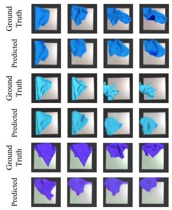

Исследователи из University of California и Honda Research Institute обучили робота складывать ткань. Алгоритм основывается на фреймворке для обучения визуальной динамики объектов на основе RGB изображений, — Visual Foresight. Такие роботы могут быть полезны в текстильной промышленности и хирургии.
Автоматизация работы с тканью имеет прикладную полезность в робототехнике, текстильной промышленность, уходе за пожилыми и хирургии. Существующие методы для манипуляции тканью разрабатываются для отдельных задач. Это затрудняет их масштабирование на схожие задачи из других доменов.
Чтобы выучить динамику ткани, использовали модифицированный фреймворк Visual Foresight. Фреймворк можно переиспользовать в задаче манипуляции тканью с помощью одной политики для RL-агента, условленной на конечную цель. В данном случае конечной целью является целевое положение ткани. Исследователи расширили свой VisuoSpatial Foresight (VSF) фреймворк, который выучивает визуальную динамику на случайно расположенных RGB изображениях из одного домена. Одновременно с динамикой VSF выучивает карты глубины. Процесс обучения проходит в симуляции.
В ранней работе VSF тестировали на многошаговых задачах разглаживания и складывания ткани. Систему сравнивали с 5 базовыми подходами в симуляции и с помощью хирургического робота da Vinci Research Kit (dVRK). В текущей работе в VSF меняли 4 аспекта: генерацию данных, выбор модели для визуальной динамики, функционал ошибки и алгоритм оптимизации. По результатам экспериментов, обучение моделей визуальной динамики на более длительных действиях улучшает эффективность моделей на задаче складывания ткани на 76%. VSF решает задачу складывания ткани с 90% точностью.
